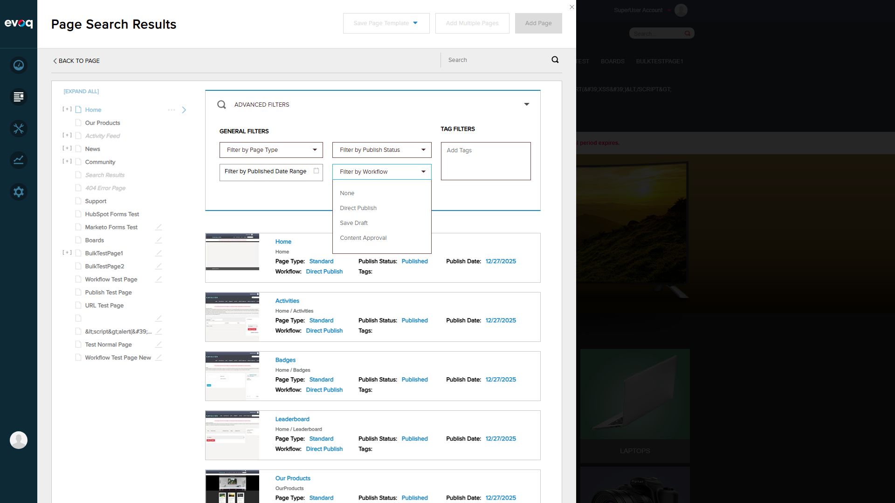
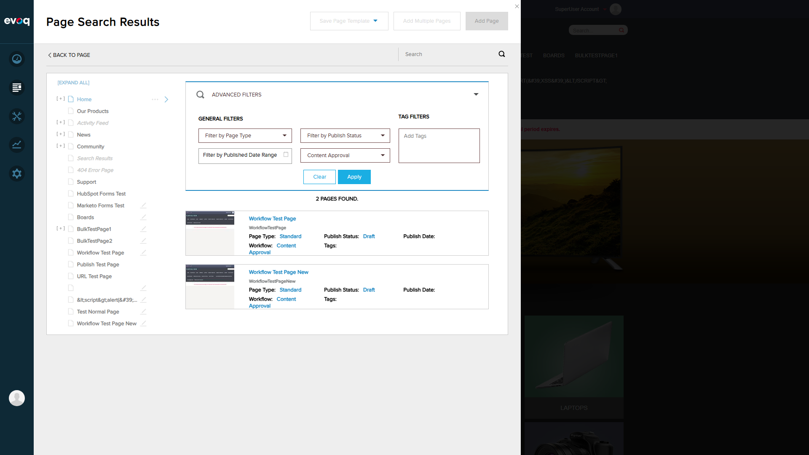
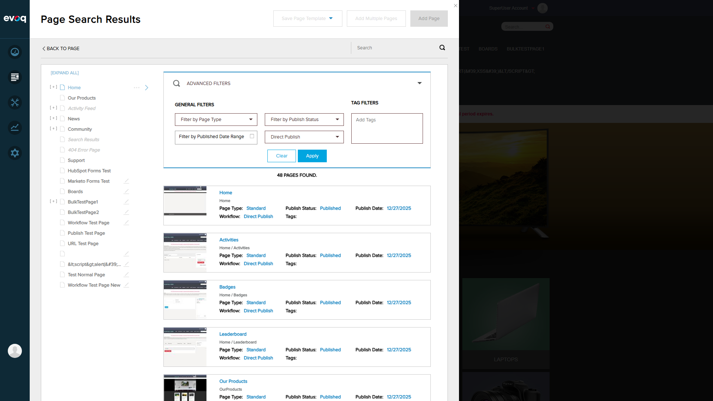

Feature Description
Search and filter pages based on workflow status and workflow assignment. The feature allows administrators to find pages by their assigned workflow, combine workflow filtering with other criteria (search text, publish status, page type), and verify results accuracy.
Available Workflow Types
| Workflow Name |
Description |
Pages Count |
| Direct Publish |
Pages are published immediately without approval |
48 pages |
| Content Approval |
Pages require approval before publishing |
2 pages |
| Save Draft |
Pages are saved as drafts |
0 pages |
Scenario 1: Filter Pages by Workflow ID
PASS
Objective: Verify that pages can be filtered by specific workflow ID
Steps Taken:
- Navigated to Content > Pages in PersonaBar
- Clicked the search/filter icon to open Page Search Results
- Expanded "Advanced Filters" section
- Opened "Filter by Workflow" dropdown
- Selected "Content Approval" workflow
- Clicked "Apply" button

Workflow filter dropdown showing available options: None, Direct Publish, Save Draft, Content Approval

Results filtered by "Content Approval" workflow - 2 pages found
Result:
PASS - The filter correctly returned 2 pages with "Content Approval" workflow:
- Workflow Test Page
- Workflow Test Page New
Both pages display "Workflow: Content Approval" and "Publish Status: Draft" as expected.
Scenario 2: Search Pages with Workflow Criteria
PASS
Objective: Verify that text search works in combination with workflow filtering
Steps Taken:
- With "Content Approval" workflow filter already applied
- Entered "Workflow" in the search text box
- Pressed Enter to trigger search
- Verified results show only pages matching both criteria
Search text "Workflow" combined with workflow filter - 2 pages found
Result:
PASS - Search successfully combines with workflow filter. Pages returned match both:
- Search text "Workflow" in page name
- Workflow type "Content Approval"
Scenario 3: Combine Workflow Filter with Other Filters
PASS
Objective: Verify that workflow filter can be combined with other advanced filters
Steps Taken:
- Maintained search text "Workflow" and workflow filter "Content Approval"
- Opened "Filter by Publish Status" dropdown
- Selected "Draft" status
- Clicked "Apply" to combine all filters
Combined filters: Search "Workflow" + Publish Status "Draft" + Workflow "Content Approval"
Result:
PASS - All three filters work together correctly:
- Search text: "Workflow"
- Publish Status: "Draft"
- Workflow: "Content Approval"
Result: 2 pages found matching all criteria.
Scenario 4: Verify Search Results Accuracy
PASS
Objective: Verify that search results are accurate and match the filter criteria
Steps Taken:
- Cleared all filters
- Selected "Direct Publish" workflow only
- Clicked "Apply" and verified results
- Compared total count against known data

48 pages found with "Direct Publish" workflow
Result:
PASS - Results accuracy verified:
| Filter |
Expected |
Actual |
Status |
| No filter (all pages) |
50 |
50 |
Match |
| Content Approval |
2 |
2 |
Match |
| Direct Publish |
48 |
48 |
Match |
All pages in Direct Publish results correctly display "Workflow: Direct Publish".
Scenario 5: Pagination with Workflow Filter
PASS
Objective: Test pagination functionality when workflow filter is applied
Steps Taken:
- Applied "Direct Publish" workflow filter (48 pages)
- Reviewed page display and scrolling behavior
- Verified all results are accessible

Results display showing all 48 Direct Publish pages in scrollable list
Result:
PASS - Pagination/results display works correctly:
- The UI displays results in a scrollable list format
- All 48 pages are accessible via scrolling
- The API supports pagination parameters (pageIndex, pageSize) for programmatic access
- Total count "48 PAGES FOUND" is accurately displayed
Note: The UI implementation uses a scrollable list rather than traditional pagination controls, which is appropriate for this volume of results.
Technical Implementation Details
Based on code review of EvoqPagesController.cs:
SearchPages API Endpoint
GET api/EvoqPages/SearchPages
Parameters:
- searchKey: string (text search)
- pageType: string (Standard, URL, File, etc.)
- tags: string (comma-separated tags)
- publishStatus: string (All, Published, Draft)
- publishDateStart: string (date filter start)
- publishDateEnd: string (date filter end)
- workflowId: int (workflow ID filter, -1 = no filter)
- pageIndex: int (pagination)
- pageSize: int (pagination)
Response:
- Success: boolean
- Results: array of page items with workflow info
- TotalResults: total count
GetWorkflows API
Returns available workflows for filter dropdown selection.